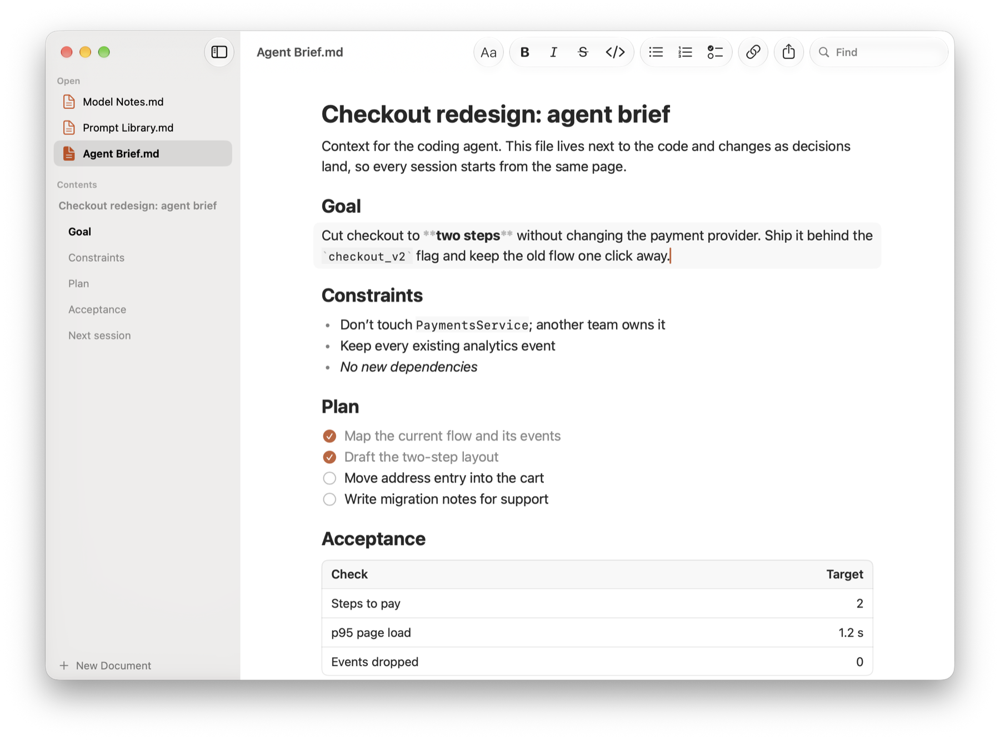

The Markdown editor for working with AI.
Prompts, agent briefs, specs, and model output are all Markdown. The editors around it are either bloated or complex. MDown is a small native Mac app that keeps the page readable and puts the Markdown one click away.
- Free
- Open source, MIT licensed
- Native Swift, made for macOS

Everything else is too much.
Note apps keep your writing in their own database, behind an account, a sync service, and a plugin store. Code editors want extensions and settings before a heading even looks like a heading.
Working with AI needs less. You open a .md file, read what the model wrote, fix a line, and hand it back. MDown does exactly that, then gets out of the way.
Click a line to see how it’s written.
Every block on an MDown page is real Markdown. Click one and it turns into its source, right where it was. Change it, then click away and it sets again.
Try it on this page. Press esc or click outside to finish.
Small on purpose.
- Your files stay files
- Plain .md files on disk. No database, no account, no sync service. Git, your terminal, and your AI tools all read the same file you do.
- Native and quick
- Written in Swift with SwiftUI and AppKit. It opens instantly, stays light on memory, and behaves like the rest of your Mac.
- Edit in place
- Click any block to edit its Markdown. Return starts a new paragraph or list item, Tab nests a list, and the arrow keys move between blocks.
- Every open file in view
- The sidebar lists your open documents, the current one’s headings, and recent files. Switch with a click, jump to any section.
- Shortcuts you already know
- Title, Heading, Body, and Checklist use the same keys as Notes. Bold is ⌘B, a link is ⌘K, and Find is ⌘F.
- Free and open source
- MIT licensed and built in the open. Read the code, change it, and make it yours.
Get MDown
- Requires macOS 26 or later
- Runs natively on Apple silicon and Intel
First launch: MDown isn’t notarized by Apple yet, so macOS stops it the first time. Open System Settings, go to Privacy & Security, and click Open Anyway next to MDown. You only do this once.
Or build it yourself
$ git clone https://github.com/sandeepgangarapu/mdown.git $ open mdown/MDown.xcodeproj